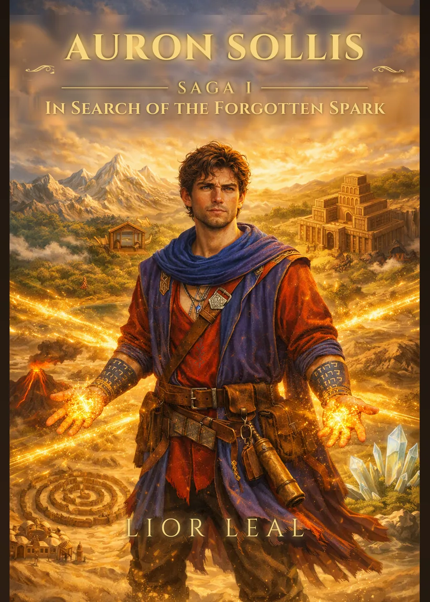
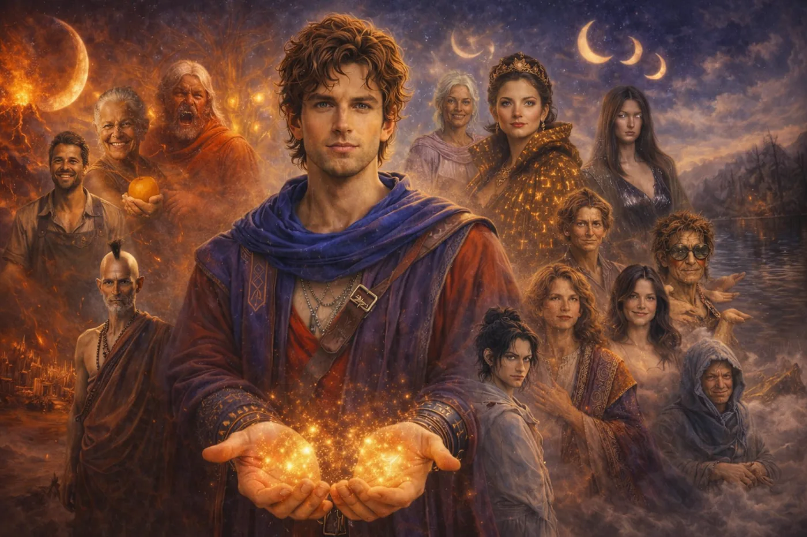

The Saga of the Inner Rift
Saga I · In Search of the Forgotten Spark
The map you are looking for is you.
Thirteen seats. Twelve numbers. The crossing is not a line — it is a circle that closes only when the traveller stops needing it. Touch a seat.
CHOOSE A SEAT
Before the first chapter there is a Prologue, and after the last an Epilogue. Between the second seat and the third sits one that carries no number — it was never meant to.

The English edition is available now on Kindle. The Portuguese edition follows — join the list below and you will hear first.
The territory Auron crosses, as he himself would have drawn it — had he reached the end of the crossing with a steady enough hand.
Three of the regions marked on the map, as Auron finds them.
Four movements that follow the crossing, and eight themes that circle it. Nothing plays until you ask it to.
0:00
The themes are thirty-second sketches.
Thirty-three. A cartographer. Two names on the Hebrew bands at his wrists, and a light in his palms he did not ask for and cannot put down.
Front, side and back — the reference every plate is drawn against.

Guardians are waiting for him, each with a lesson he never asked for. Others are waiting for something else — and not one of them introduces himself as an enemy.
A solo journalling game cut from the second chapter: you sit with Kaelen Ôm and he asks you the questions he asked Auron. One player, one notebook, one hour. Free.
Lior Leal is the pen name of a Brazilian psychologist writing from the coast of Rio de Janeiro. Átnor was built over years from three materials: Jung's individuation, the Kabbalistic tree, and the stubborn conviction that a map is only ever a confession.
Leave your email and the illustrated map of Átnor arrives at full resolution, along with the first chapter. You will also be the first to know when the Portuguese edition and Book Two are ready.